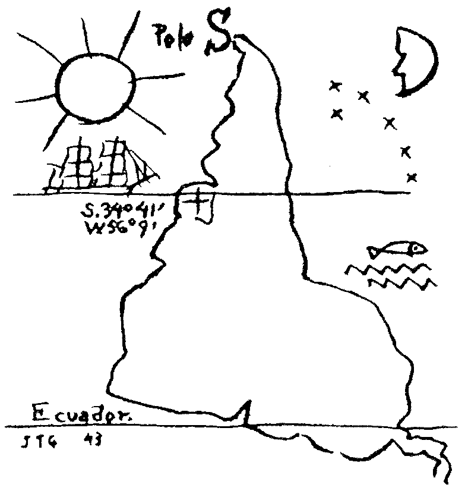
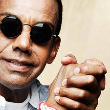
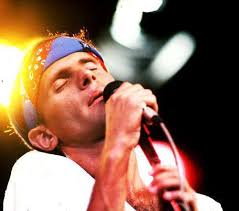
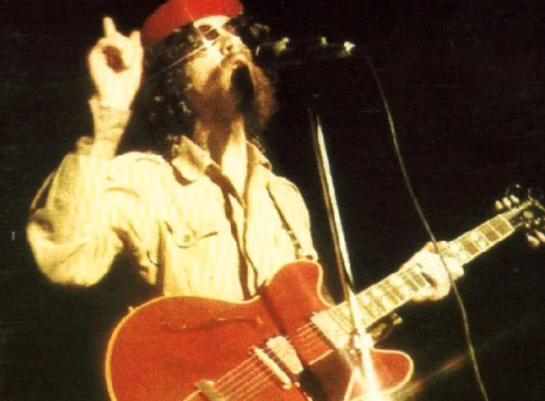
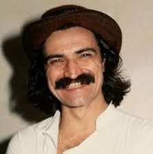
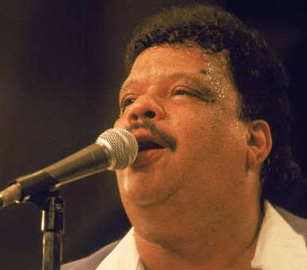
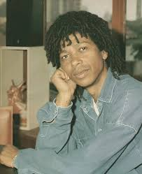
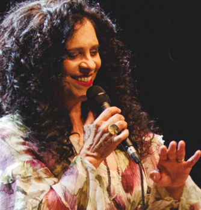
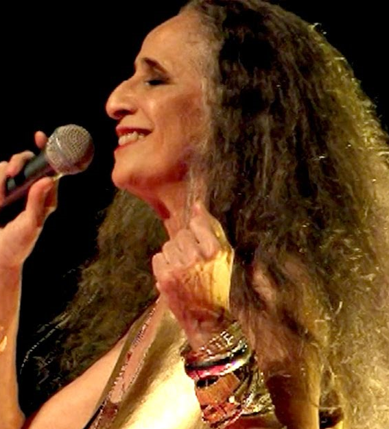
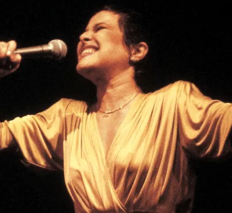

Marisa Monte
Cantora e compositora carioca, é um dos maiores nomes do pop-MPB contemporâneo, conhecida por sua voz técnica e pelo trio Tribalistas.

Cantora e compositora carioca, é um dos maiores nomes do pop-MPB contemporâneo, conhecida por sua voz técnica e pelo trio Tribalistas.

Criador de um estilo único que mistura samba, funk e rock, é o pai do "samba-esquema-novo" e mestre do suingue violão.

Poeta e rebelde do rock nacional, foi vocalista do Barão Vermelho e uma voz visceral da liberdade e da política nos anos 80.

O "Pai do Rock Brasileiro", uniu filosofia, misticismo e ritmos nordestinos à rebeldia do rock, tornando-se um ícone eterno.

Compositor cearense de letras profundas e existenciais, sua obra narra as angústias do jovem latino-americano com rara precisão.

O síndico do soul brasileiro, introduziu o soul e o funk na música nacional com sua voz potente e personalidade explosiva.

Alagoano mestre em fundir ritmos africanos com jazz e MPB, é famoso por harmonias complexas e letras de imagens abstratas.

Cantora e compositora que estourou nos anos 90 com o hit "Palpite", marcando o pop romântico com sua voz suave e marcante.

Uma das vozes mais cristalinas do Brasil, foi musa da Tropicália e transitou com perfeição do rock psicodélico à bossa nova.

Cantor e compositor mineiro, sua voz "de anjo" e o Clube da Esquina criaram uma sonoridade universal que une jazz e folclore.

A Abelha Rainha da MPB, é conhecida por sua interpretação dramática, presença de palco teatral e conexão com o Recôncavo Baiano.

Considerada por muitos a maior cantora do país, a "Pimentinha" era dona de uma técnica impecável e de uma entrega emocional absoluta.